Префектура Хёго · Акаси · еда и сакэ
«Татиноми Танака»: ради этой стойки с сакэ стоит ехать в Акаси
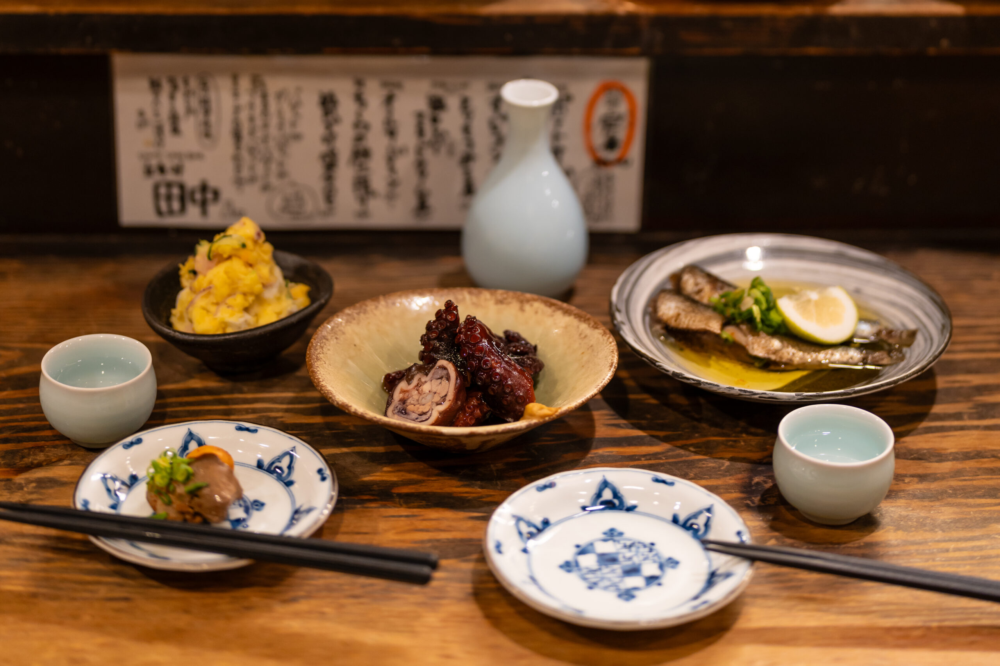
В Японии есть особый жанр выпивки: какуути, когда сакэ пьют стоя прямо в винной лавке. Самым знаменитым какуути страны многие называют «Татиноми Танака» на рыбной улице портового Акаси, и к открытию сюда выстраивается очередь.
Место
Лавка на рыбной улице
Акаси стоит на берегу Внутреннего Японского моря и считается главным рыбацким городом префектуры Хёго. Его кухней называют торговую улицу Уонотана: под одной крышей здесь тянутся рыбные лавки, магазины рыбной пасты и маленькие закусочные. В одном из её уголков и находится заведение, которое любители сакэ зовут лучшим какуути Японии.
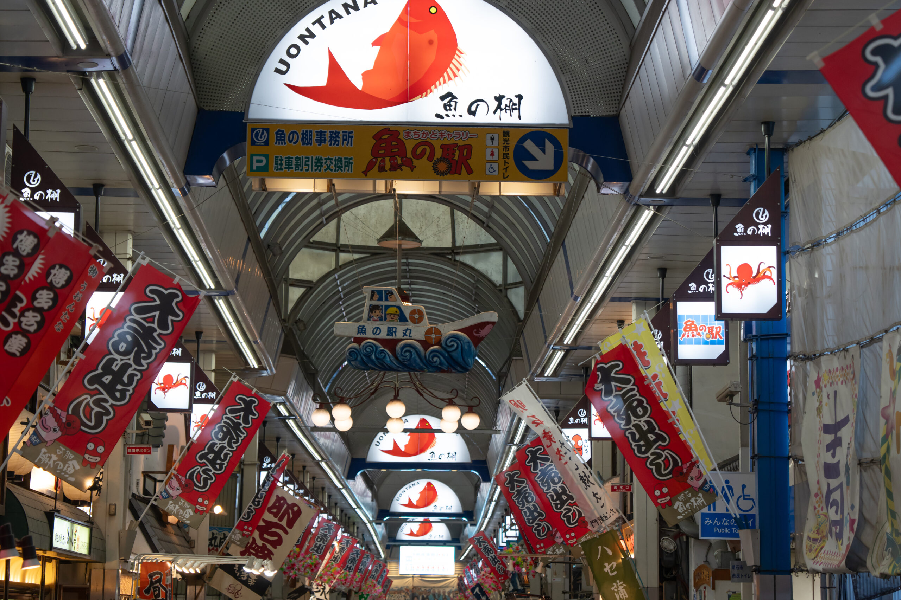
Основа заведения это винная лавка «Танака-я», открытая в 1931 году. Когда-то здесь продавали не только спиртное, а вообще всё нужное, как в нынешнем круглосуточном магазине. Бабушка нынешнего хозяина открывала лавку в пять утра и наливала рыбакам сакэ вместо завтрака. Такая история могла случиться только в городе, который живёт вместе с рыбным рынком.
«Наш какуути начался со стойки, где угощали моряков, вернувшихся с ночного лова»
хозяин лавки в третьем поколении
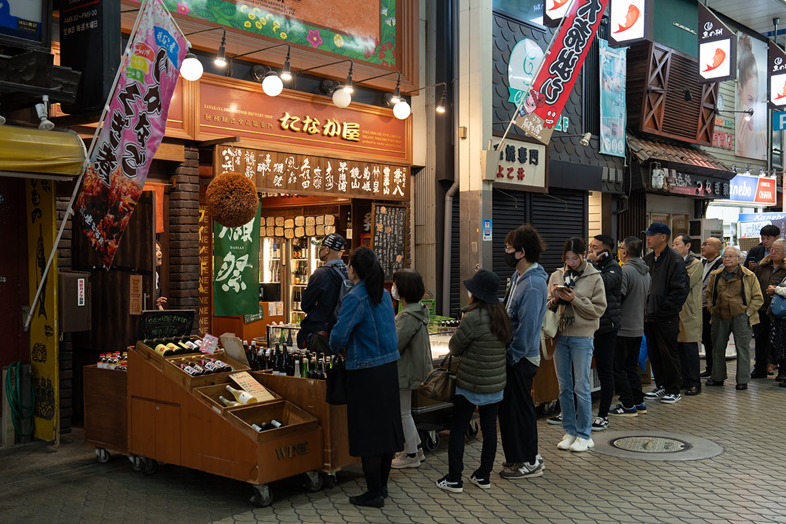
Потом поколения сменились, торги на рынке стали начинаться позже, и какуути перешёл на дневные и вечерние часы. На закуску тогда подавали в основном сушёную рыбу и орешки. Второй хозяин любил готовить и ближе к шестидесяти всё чаще говорил, что хочет кормить гостей настоящей едой, но не успел исполнить задуманное.
«Когда я принял дело, мне едва хватало сил на винную лавку. Я долго думал, оставлять ли какуути»
хозяин лавки в третьем поколении
Всё решили поездки по сакэварням. В командировках хозяин пробовал местное сакэ вместе с местной едой и понял, как это интересно. Он решил принять эстафету от отца и перезапустить какуути таким, каким его видела семья: местом, где можно сразу съесть рыбу, только что прошедшую торги. У Акаси для этого есть своё преимущество, «хируами», дневная сеть: рыбу, выловленную утром, продают на дневном рынке, и в тот же день она попадает в лавки и на кухни. После обновления, около двадцати лет назад, открылся нынешний «Татиноми Танака». Сакэ здесь подбирают не по каталогам, а по знакомству: это напитки «честных» производителей со всей страны, с которыми хозяев связывают личные отношения.
Ферментация
Рыбный соус и сакэ-касу
Рядом с бутылками на полках лавки стоят ферментированные продукты, и это тоже визитная карточка «Танака-я». Их можно есть прямо как закуску к сакэ, а можно использовать как приправу, которая подчёркивает вкус продуктов.
Началось всё с рыбного соуса из иканаго, мелкой рыбки-песчанки. Его производство в Акаси когда-то прекратилось, и хозяин добился, чтобы соус снова начали выпускать под названием «Акаси-но гёсё». Его мощный вкус умами нужен и на кухне какуути. Капля в начинку для шумая с кальмаром делает вкус собраннее, а в сливочном соусе для запечённых морепродуктов соус добавляет глубины. Здесь любят и сакэ-касу, рисовый жмых, оставшийся после варки сакэ. Сакэ и вино тоже рождаются из брожения, поэтому сочетание ферментированной еды с ферментированными напитками получается особенно удачным.
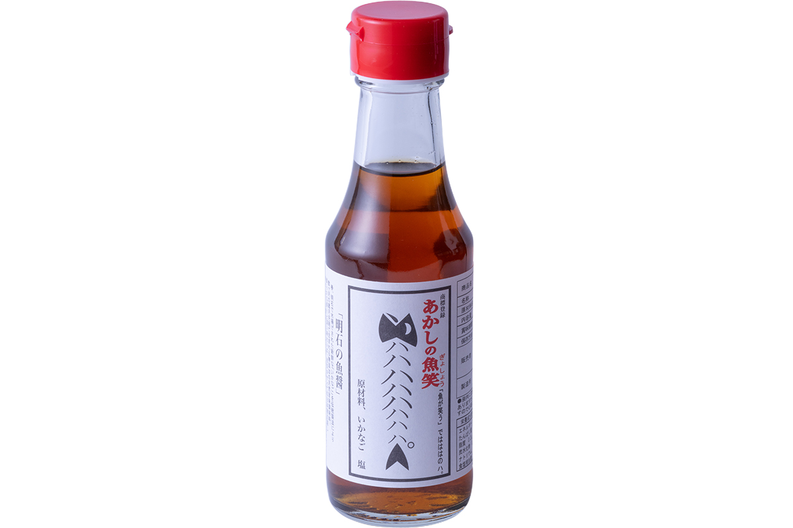
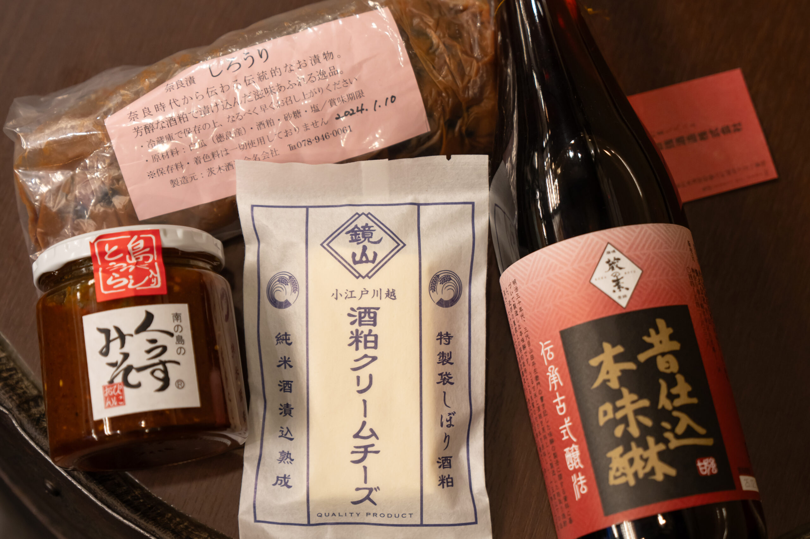
Вечер
Пятьдесят блюд на стойке
Ровно в 17:00 дверь открывается, и очередь, которая ждала у входа, исчезает внутри. Начинается вечерняя работа «Татиноми Танака».
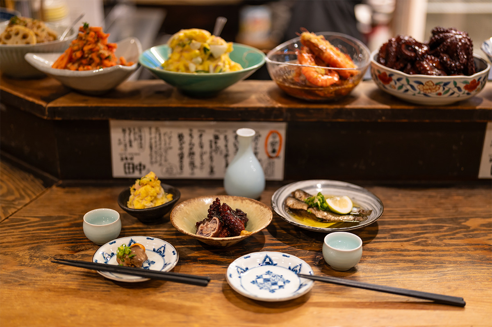
Первым делом взгляд цепляется за большие миски на стойке. Блестящие сардины в масле собственного приготовления, глянцевый тушёный осьминог и другие блюда из рыбы дневного улова, а рядом картофельный салат и много овощных закусок. К ним добавляются сашими из сезонной рыбы, тэмпура и другое: всего не меньше пятидесяти позиций. По уровню это настоящий ресторан, но хозяйка с улыбкой поправляет.
«Мы всё-таки какуути при винной лавке. Это место, где пьют сакэ и получают от этого удовольствие»
хозяйка
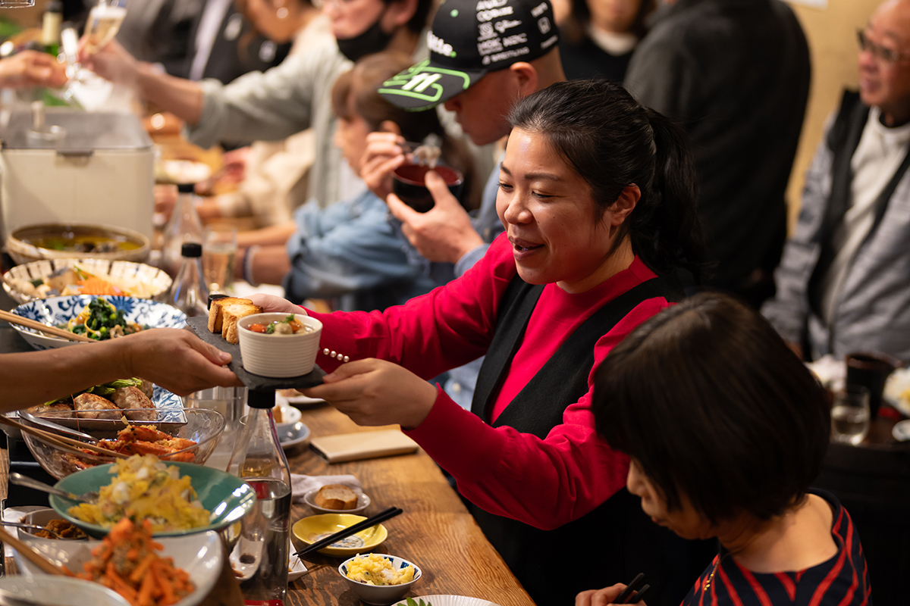
Когда хозяйка впервые встала за стойку, у неё были маленькие дети и никакого опыта работы в общепите. Она держалась за основы: аккуратно разделывать рыбу и морепродукты, всегда варить настоящий бульон даси. Меню росло вместе с рецептами, которые она где-то видела или слышала, и постепенно о заведении узнали сначала любители сакэ в регионе Кансай, а потом и по всей стране. Сегодня сюда едут из ближних Кобе и Окаямы, а также из Токио и с Хоккайдо.
При этом «Татиноми Танака» остаётся местным какуути. Бронь принимают только на открытие по субботам, воскресеньям и праздникам. Около пятой части гостей это жители Акаси, которые заходят больше половины дней в неделю.
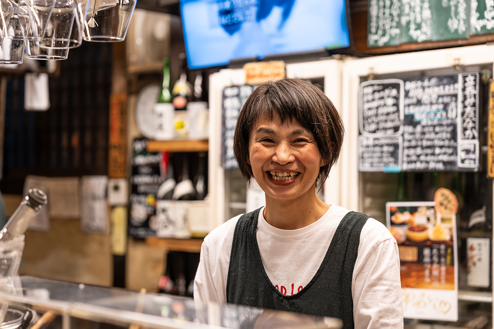
Займите место у стойки и заказывайте. Сезонное сакэ выписано на доске, но лучше всего спросить совета у хозяйки или сотрудников.
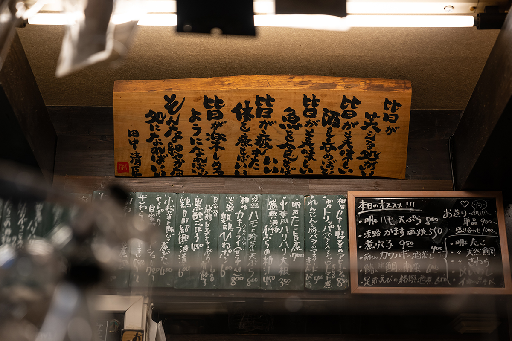
«Каждый день работы для нас как занятие в классе. Мы понемногу собираем, что гостям нравится и как они реагируют, и по этим наблюдениям подбираем сакэ»
хозяйка
К выпивке обычно ждут густых сладко-солёных закусок, но одна из тем здесь «пить под даси». Попробуйте, например, лёгкую зелень в бульоне вместе с мягким ароматным дзюммай дайгиндзё.
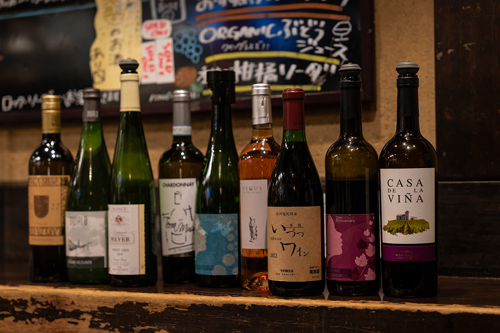
Пара за соседним местом, похоже завсегдатаи, советует: «Вот это вкусно, бери». Сотрудница спрашивает гостя, пришедшего в одиночку: «Сделать порцию поменьше?» Но никто ничего не навязывает и не лезет в душу, и от такой дистанции здесь легко. Заведений, куда хочется ходить, будь они рядом с домом, много. «Татиноми Танака» другое: ради него хочется приехать в Акаси, а лучше остаться на ночь и прийти ещё раз.
Пары
Акаси на тарелке и в чашке
Вот какие сочетания еды и напитков предлагают в «Татиноми Танака». Цены указаны на 2024 год, за сакэ цена за бокал 140 мл.
Самая простая пара начинается с даси. Сезонная зелень в бульоне вместе с дзюммай дайгиндзё показывает, как работает идея «пить под даси», а к картофельному салату подают сакэ с ярким ароматом.
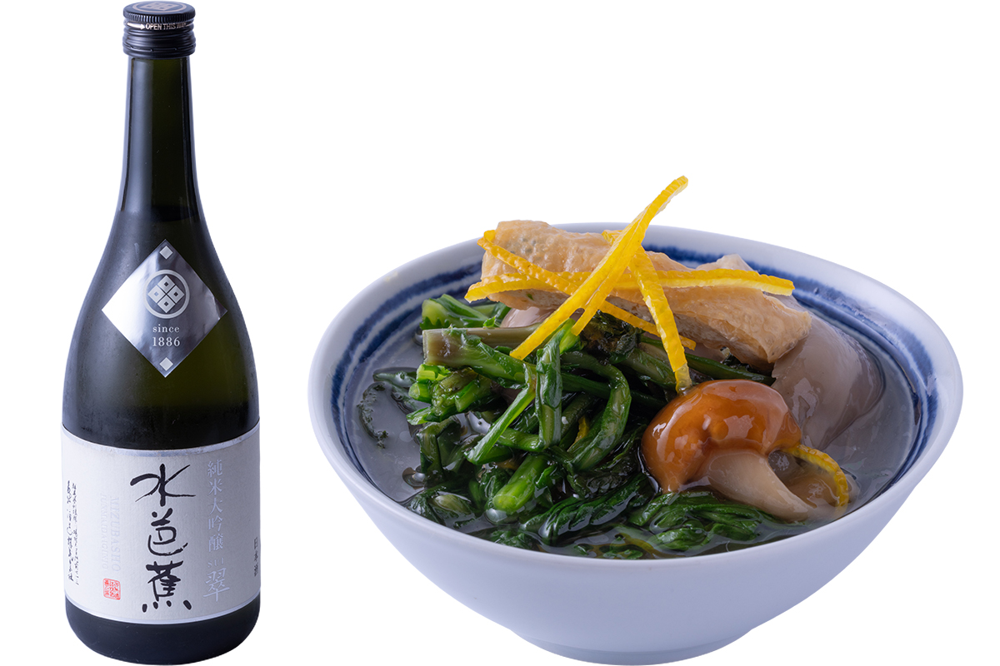
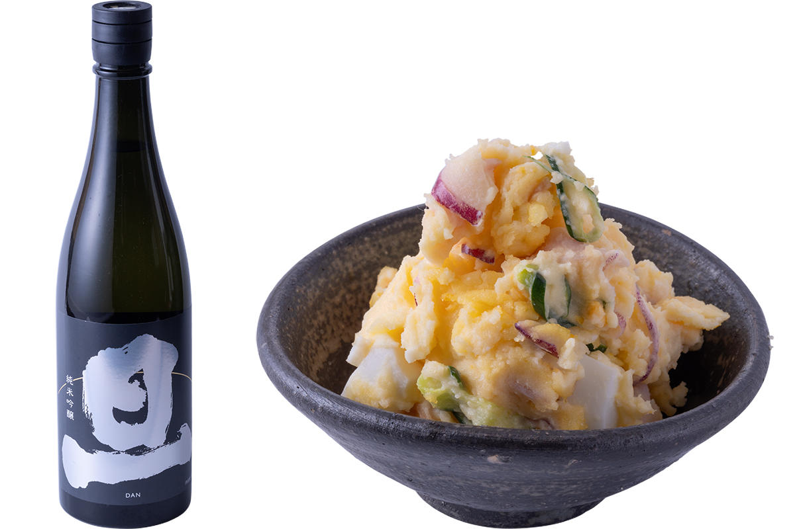
Осьминог считается главным продуктом Акаси, и здесь его просто тушат, чтобы не спрятать вкус. Для тушёных куриных потрохов в мисо выбирают сакэ из серии с гербами, которую разливают только для «Танака-я».
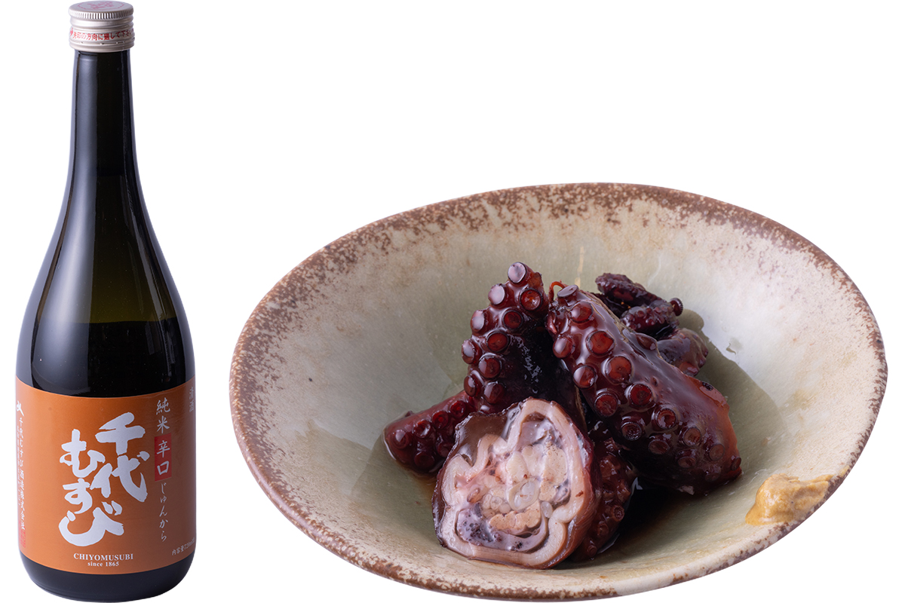
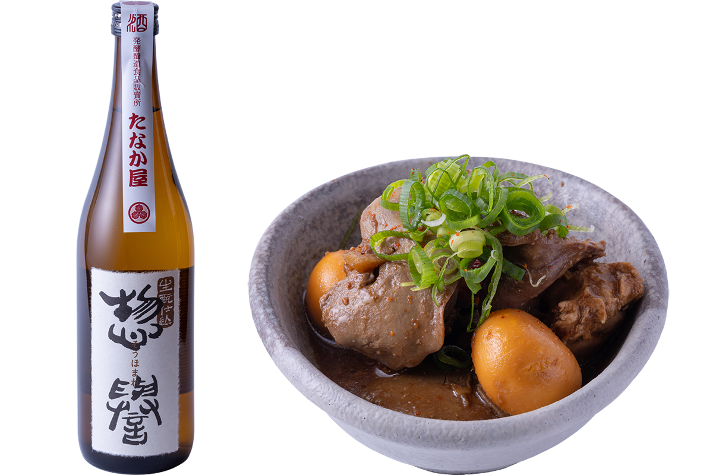
У сардин в масле много поклонников. К ним советуют дзюммай гиндзё из префектуры Нагано, а к супу на сакэ-касу берут сакэ той же сакэварни, которая дала жмых.
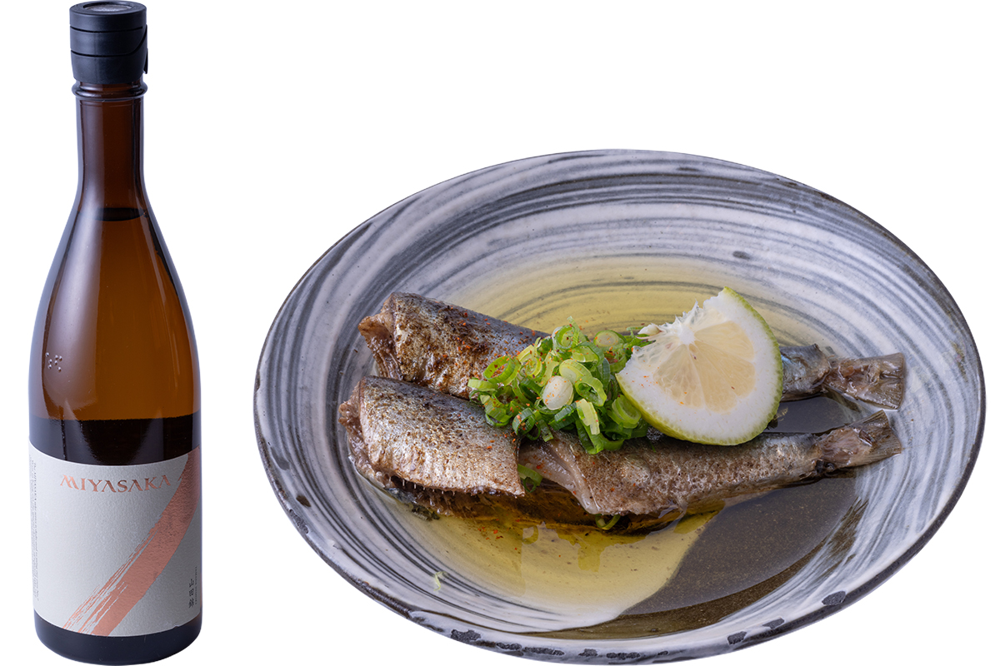
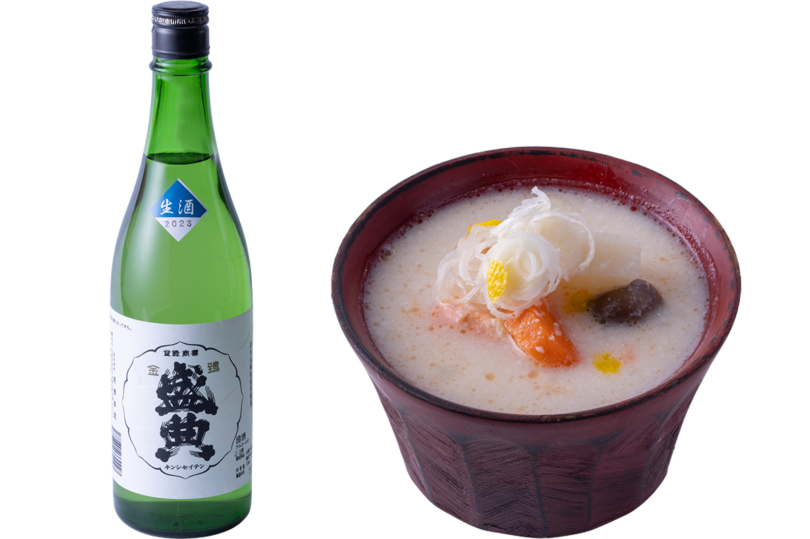
Кроме того, в тот день в меню были такие напитки (цены 2024 года, за бокал):
- сакэ: «Райраку» дзюммай, непастеризованное и неразбавленное (700 иен), «Окура Хи-но хикари» ямахай дзюммай (700 иен), «Какурэй» токубэцу дзюммай (800 иен), «Тикусэн» дзюммай (700 иен), «Итинэн-фудо» токубэцу дзюммай хиёороси (800 иен), «Курумадзака» дзюммай (800 иен);
- сётю: «Сэнкамэдзё» и «Рюгу» (по 500 иен);
- японское вино: «Аргабранка Кларэса» от «Кацунума дзёдзо» (800 иен) и сладкое «Идзуцу» (700 иен);
- нефильтрованное разливное пиво местной пивоварни Акаси (650 иен), сезонный свежий сауэр и сливовое вино умэсю с тёртым яблоком (по 500 иен).
Меню еды и напитков понемногу меняется каждый день.
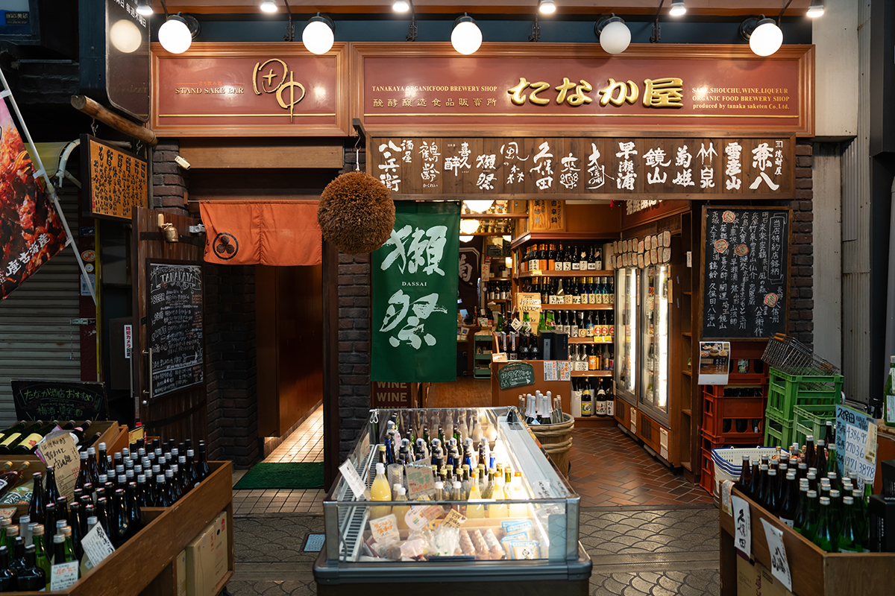
«Татиноми Танака»
- Адрес
- префектура Хёго, Акаси, Хонмати, 1-1-13
- Телефон
- +81 78-912-2218
- Часы работы
- 12:00–14:00, 17:00–21:00 (последний заказ в 20:30); в субботу, воскресенье и праздники 12:00–18:00 (последний заказ в 17:30); в воскресенье с 12:00 до 14:30 только сет от повара по предварительной записи. Винная лавка: 10:00–19:00
- Выходные
- среда и четверг
Фото: Садахо Найто.